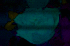
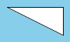

- Index
 ImageMagick Examples Preface and Index
ImageMagick Examples Preface and Index
- Known and Fixed Bugs Index
These examples are quick tests, with little or no explanation, to check on
whether a specific known, but simple, bug has been fixed or not in the last
version of IM. As such whenever a new release of IM is downloaded, this page
is automatically re-generated to test the current status of the bug in
question.
Minor Bugs and Problems
These are known bugs, that will probably take some time to figure out and fix.
Copy Black for CMYK composition
Separate a rose image into its CMYK channels.
magick rose: -colorspace CMYK -separate separate_CMYK_%d.gif
|
![[IM Output]](../../images/rose.gif)

![[IM Output]](separate_CMYK_0.gif)
![[IM Output]](separate_CMYK_1.gif)
![[IM Output]](separate_CMYK_2.gif)
![[IM Output]](separate_CMYK_3.gif)
Using combine to re-create the original image works.
magick separate_CMYK_?.gif -set colorspace CMYK -combine \
-colorspace RGB rose_CMYK_combined.gif
| |
![[IM Output]](rose_CMYK_combined.gif)
|
Now lets try to use the channel coping compose methods to re-combine them.
magick separate_CMYK_0.gif -colorspace CMYK \
separate_CMYK_0.gif -compose CopyRed -composite \
separate_CMYK_1.gif -compose CopyGreen -composite \
separate_CMYK_2.gif -compose CopyBlue -composite \
separate_CMYK_3.gif -compose CopyBlack -composite \
-colorspace RGB rose_CMYK_combined_alt.gif
| |

|
Which is obviously not the original rose image.
Check the channel contents after copies shows a complete break down of the
black channel copy.
magick separate_CMYK_0.gif -colorspace CMYK \
separate_CMYK_0.gif -compose CopyRed -composite \
separate_CMYK_1.gif -compose CopyGreen -composite \
separate_CMYK_2.gif -compose CopyBlue -composite \
separate_CMYK_3.gif -compose CopyBlack -composite \
-separate separate_again_%d.gif
|
![[IM Output]](separate_again_1.gif)
![[IM Output]](separate_again_2.gif)
![[IM Output]](separate_again_3.gif)
Semi-transparent, round end caps
Semi-transparent strokes with end caps produce a extra overlay when it
shouldn't.
magick -size 100x60 xc:skyblue \
-fill white -stroke '#0004' -strokewidth 16 \
-draw "stroke-linecap round path 'M 60,30 L -10,30'" \
draw_endcap.gif
| |
![[IM Output]](draw_endcap.gif)
|
The line in the middle is the white fill for this single line.
I could not find any other problems for other end caps, or for
round linejoins.
Arcs and Line Join
There appears to be a bug in 'arc' or 'ellipse' in that it is drawing the
'straight chord' if you enable "
stroke-linejoin round".
magick -size 100x60 xc:skyblue -fill none -stroke white -strokewidth 5 \
-draw "stroke-linejoin round ellipse 50,0 45,45 60,160" \
draw_linejoin.png
| |
|
If stroke-linejoin is not given the the enclosing chord (correctly).
Note this happened my mistake when I ment to be using
'
stroke-linecap', but this should not happen in any case.
This may be related to the next bug...
Polyline with stroke 3 or more goes wrong
With a stroke of 2 this is fine.
magick -size 80x60 xc:white -fill white -colorspace RGB \
-draw "stroke black stroke-width 2 stroke-linejoin round \
polyline 14,53 30,5 71,14 51,41" \
-colorspace sRGB draw_line2.png
| |
![[IM Output]](draw_line2.png)
|
But with a stroke of 3 it goes wrong.
magick -size 80x60 xc:white -fill white -colorspace RGB \
-draw "stroke black stroke-width 3 stroke-linejoin round \
polyline 14,53 30,5 71,14 51,41" \
-colorspace sRGB draw_line3.png
| |
![[IM Output]](draw_line3.png)
|
But without the stroke-linejoin round it works correctly again.
magick -size 80x60 xc:white -fill white -colorspace RGB \
-draw "stroke black stroke-width 3 \
polyline 14,53 30,5 71,14 51,41" \
-colorspace sRGB draw_line3_2.png
| |
![[IM Output]](draw_line3_2.png)
|
UPDATE: Supposedally fixed in IM v6.9.6-9
MVG: diagonal lines are too thick!
A slanted diagonal line appears to be a reasonable thickness
Especially if you use a linear colorspace for drawing...
magick -size 100x60 xc:skyblue -colorspace RGB -fill white -stroke black \
-draw "path 'M 10,10 L 90,10 L 90,50 Z'" \
-colorspace sRGB draw_path_line_closed.gif
| |

|
But the line appears to be much thicker when drawn as a dashed line.
magick -size 100x60 xc:skyblue -colorspace RGB -fill white -stroke black \
-draw "stroke-dasharray 3 3 33 3 3 3 \
path 'M 10,10 L 90,10 L 90,50 Z'" \
-colorspace sRGB draw_path_dash_closed.gif
| |
|
Created: 18 August 2005
Updated: 16 December 2016
Author: Anthony Thyssen, <Anthony.Thyssen@gmail.com>
Examples Generated with:
![[version image]](version.gif)
URL: https://imagemagick.org/Usage/bugs/testing/
{kind=link}
{kind=link}
{kind=link}
{kind=link}
{kind=link}